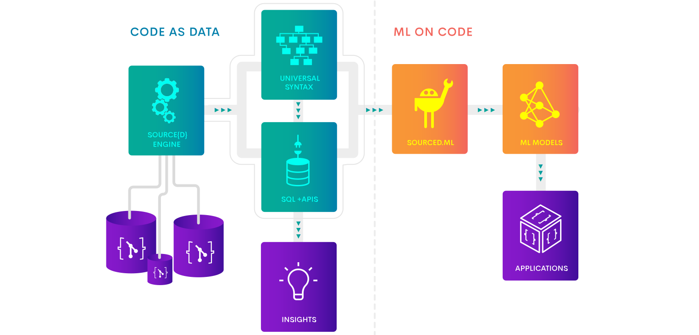
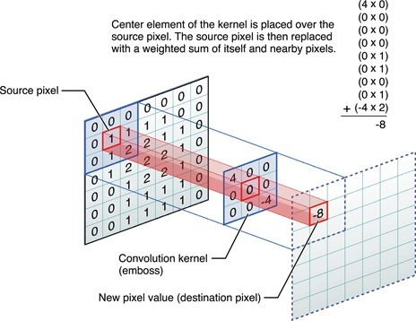

Bootstrapping
Machine Learning on Code
with ideas from
Natural Language Processing
or How to choose your hammer
- On the 18th of November, 2018
- At the GOTO CPH meetup
- By Hugo Mougard from source{d}
Who am I?
- Hugo Mougard <hugo@sourced.tech>
- Machine Learning Engineer at source{d}
- Background = NLP & ML
- Co-chair of the Nantes ML meetup
source{d}
What's Machine Learning?
Implicit programming:
- Show, don't tell
- General algorithm, specific data
Goal
One algorithm to learn them all
Status
Not there yet
Meanwhile
Inductive biasesInductive bias
Tweak of the general algo
→ helps to learn some problems
No bias
Images
Locality is key
Text
Need to handle sequences…

Text
… of variable lengths

Text
Large vocabularies. To handle them:
You shall know a word by the company it keeps
Reasonning
Machine Learning on Code
(Somewhat) new field of ML
→ Everything needs to be built/discovered
What's Machine Learning on Code?
Machine Learning applied to anything code-related:
- Bug detection
- Auto-completion
- Type inference
- Duplicates detection
- Code labelling
- …
Why is it gaining steam?
- Lots of data
- Algorithms are getting powerful enough
- Impact is huge
Consequence: ↗ in Research & products
Inductive bias for MLonCode
Which tool will be efficient?
Bimodality
Code = two separate channels:
- Algorithmic channel
- Computers, humans
- Descriptive channel
- Humans
Algorithmic channel

Descriptive channel
Very similar to natural language
- To be understood
- Mostly English
Case study
Let's apply the inductive bias of Machine Translation to code
Mutual enrichment
Reasonning in NLP, databases, …